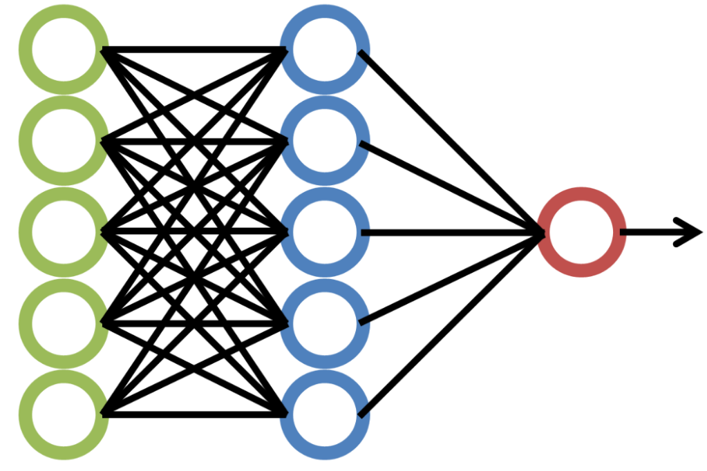

Las redes neuronales artificiales (RNA) tienen sus orígenes en los años 1940 y 1950, cuando los investigadores comenzaron a estudiar la forma en que el cerebro humano procesa la información. En 1943, el neurofisiólogo Warren McCulloch y el matemático Walter Pitts desarrollaron el primer modelo computacional de una neurona artificial. Posteriormente, en 1949, Donald Hebb propuso una regla de aprendizaje para ajustar los pesos de las conexiones entre las neuronas artificiales.
En la década de 1960, Frank Rosenblatt introdujo el concepto de "Perceptrón", una red neuronal capaz de aprender patrones simples. Sin embargo, en 1969, Marvin Minsky y Seymour Papert publicaron un libro que señalaba las limitaciones del Perceptrón, lo que provocó un declive en la investigación y desarrollo de las redes neuronales durante varios años.
No fue hasta mediados de la década de 1980 cuando el interés por las redes neuronales resurgió gracias a los avances en el algoritmo de retropropagación (backpropagation) desarrollado por David Rumelhart, Geoffrey Hinton y Ronald Williams. Este algoritmo permitió entrenar redes neuronales multicapa, lo que amplió significativamente su capacidad para resolver problemas más complejos.
Las redes neuronales artificiales son modelos computacionales inspirados en el funcionamiento del cerebro humano y el sistema nervioso biológico. Están diseñadas para imitar la forma en que las neuronas biológicas procesan y transmiten información a través de conexiones ponderadas llamadas "pesos". Estas redes están compuestas por nodos interconectados (neuronas artificiales) que operan en paralelo y son capaces de aprender a partir de ejemplos.
Existen varios tipos de redes neuronales artificiales, cada una con sus propias características y aplicaciones. Algunas de las más comunes son:
Una red neuronal artificial típica consta de tres tipos de capas:
Cada neurona artificial en una capa está conectada a todas las neuronas de la capa siguiente mediante conexiones ponderadas llamadas "pesos". Estos pesos se ajustan durante el proceso de aprendizaje para optimizar el rendimiento de la red.
El aprendizaje en las redes neuronales artificiales se refiere al proceso de ajustar los pesos de las conexiones entre las neuronas para minimizar el error entre la salida predicha y la salida deseada. Existen varios algoritmos de aprendizaje, pero los más comunes son:
Las redes neuronales artificiales tienen una amplia gama de aplicaciones en diversos campos, incluyendo:
Estas son solo algunas de las aplicaciones más destacadas de las redes neuronales artificiales. A medida que avanza la investigación y el desarrollo en este campo, surgen continuamente nuevas aplicaciones y mejoras en los modelos existentes.